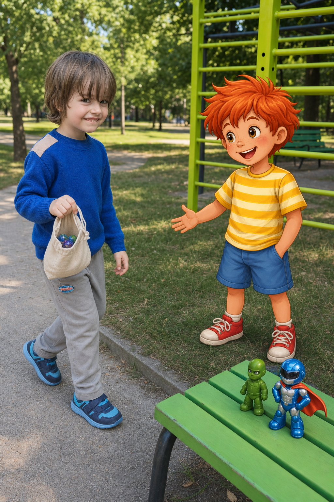
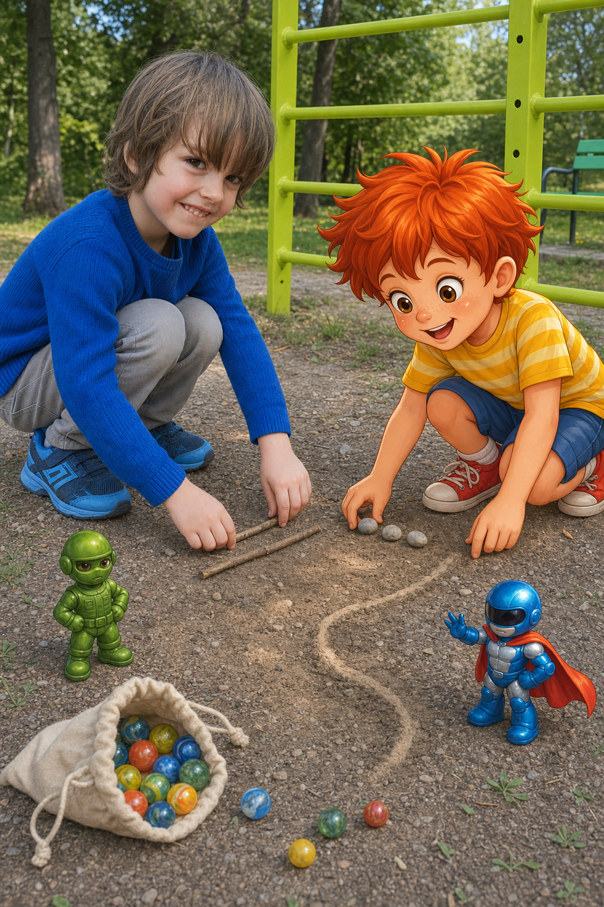
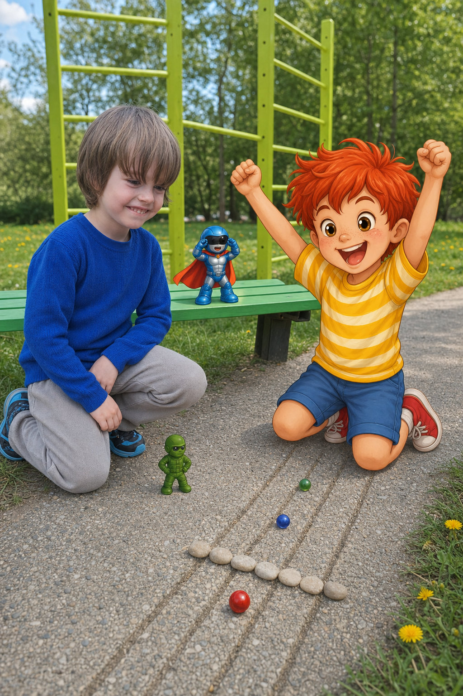
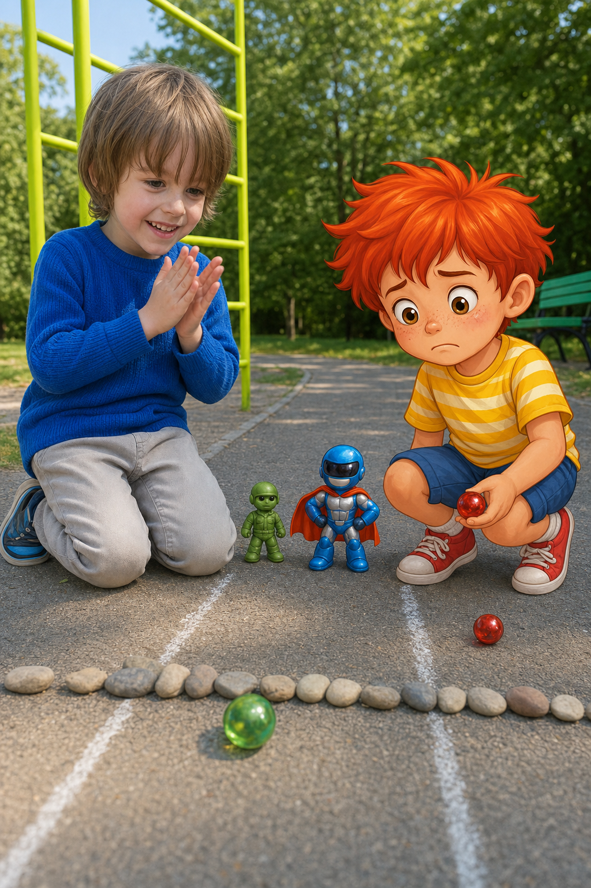
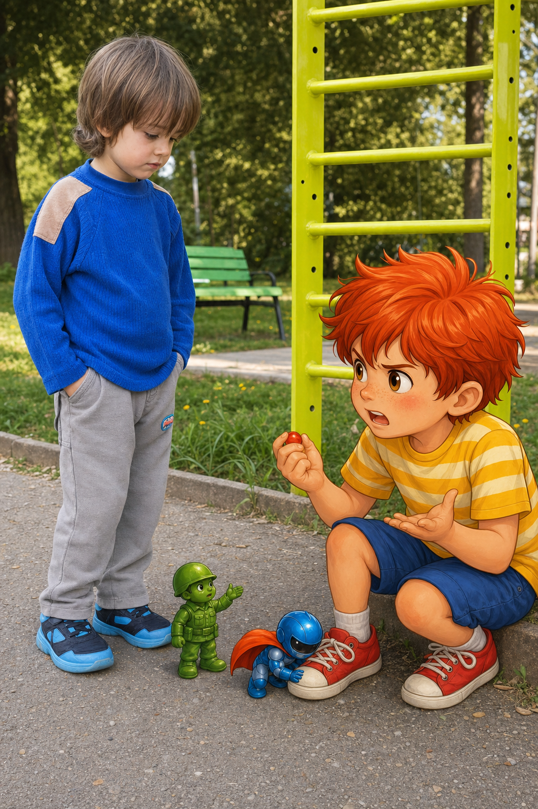
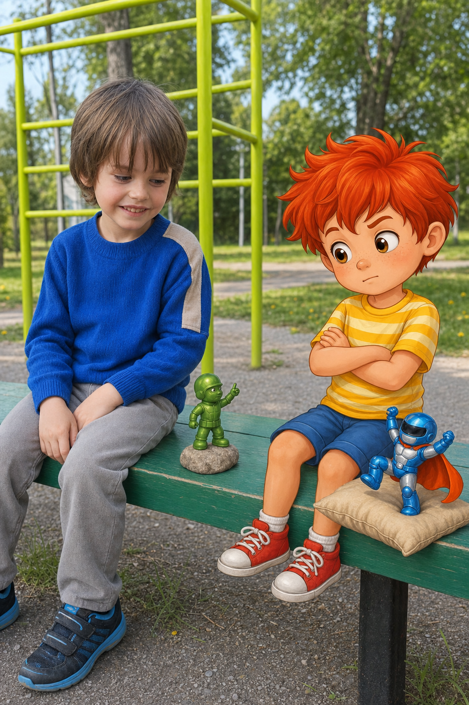
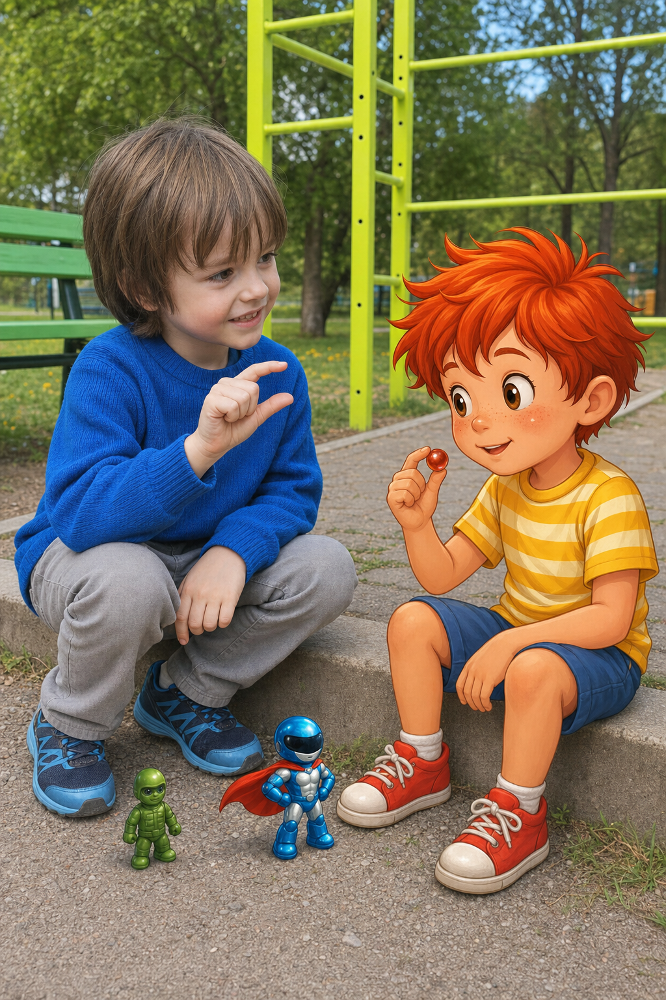
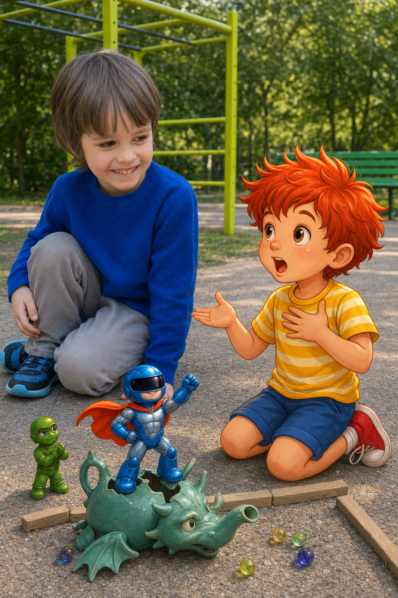
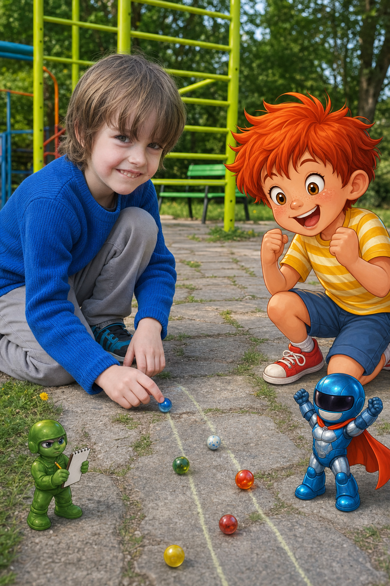
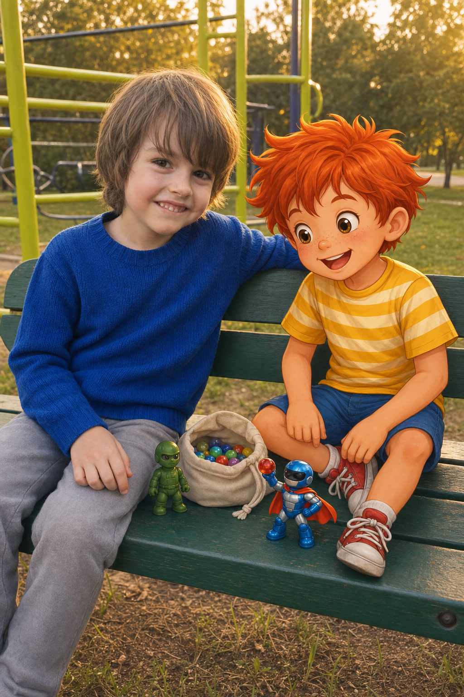

Камен и Палавко
Камен и Палавко се учат да губят достойно
Здравей, аз съм Палавко. Днес ще ти разкажа как с Камен направихме най-важното състезание на света, как аз много исках да победя и как научихме, че в игрите има два теста: победата и загубата. И ако ги приемеш с достойнство, между тях няма чак толкова голяма разлика.

Всичко започна в събота сутринта, когато слънцето светеше така, сякаш някой беше измил небето с чиста гъба.
Палавко стоеше пред блока с червената си коса, която стърчеше в три посоки едновременно. До него, на пейката, бяха Рико и Блицко. Рико беше застанал много изправен, защото според него всяка събота трябваше да има ред. Блицко лежеше по гръб и гледаше облаците.
- Този облак прилича на космически кораб - каза Блицко.
- Прилича на картоф - каза Рико.
- Космически картоф - поправи го Блицко. - Много рядък вид.
Точно тогава по алеята се зададе Камен.
Камен имаше светлокафява коса, която падаше малко над очите му, сякаш винаги бързаше да види света преди него. Очите му бяха големи и лешникови, а усмивката му беше от онези усмивки, които казват: „Аз може нищо да не съм направил, но ако е станало нещо смешно, сигурно съм наблизо.“
В ръцете си носеше малка платнена торбичка.
- Здрасти - каза Камен. - Донесох топчета.
Палавко подскочи.
- За ядене ли?
Камен отвори торбичката. Вътре имаше пет цветни дървени топчета - синьо, зелено, жълто, оранжево и едно червено, което изглеждаше най-бързо, поне според Палавко.
- Не са за ядене - каза Камен. - За състезание са.
Палавко се усмихна толкова широко, че Рико направи крачка назад от уважение към мащаба на усмивката.
- Състезание? - каза Палавко. - Аз съм роден готов за състезания.
- Ти вчера каза, че си роден готов за палачинки - напомни Рико.
- Човек може да има много таланти - отвърна Палавко.
Двамата с Камен избраха място до зелената катерушка. Там алеята имаше лека наклонена част, точно колкото едно топче да тръгне, но не толкова, че да избяга в съседния квартал и да започне нов живот.
Камен нареди две пръчки като стартова линия.
Палавко сложи три камъчета за финал.
Рико обяви, че ще бъде съдия.
Блицко обяви, че ще бъде коментатор, публика и музика за напрежение.
- Ту-ту-тууууу - започна той.
- Това не е музика за напрежение - каза Рико. - Това е влак.
- Влакът също може да е напрегнат - каза Блицко.

Първи кръг.
Камен избра синьото топче. Палавко, разбира се, избра червеното.
- Защо червеното? - попита Камен.
Палавко го погледна така, сякаш Камен беше попитал защо водата е мокра.
- Защото е най-бързо. И защото ми отива на косата.
Рико вдигна малка клонка.
- На три. Едно. Две. Три!
Двете топчета тръгнаха по алеята. Синьото се залюля наляво, после надясно. Червеното се стрелна напред, удари едно малко камъче, подскочи и мина първо през финала.
- Победа! - извика Палавко. - Червената светкавица удари земята! Публиката плаче от радост! Някой да ми донесе медал, корона и може би малко сок!
Камен се засмя.
- Браво, Палавко. Добре го пусна.
Палавко замръзна за миг. Беше очаквал Камен да каже „не се брои“ или „пак“, или поне да направи лице като кисела краставичка. Но Камен просто се усмихваше.
- Благодаря - каза Палавко важно. - Трудно е да си толкова добър, но аз някак се справям.
- Скромността ти току-що падна от катерушката - отбеляза Рико.
- Ще я взема после - каза Палавко.

Втори кръг.
Този път Камен избра зеленото топче, а Палавко пак избра червеното.
- Пак ли червеното? - попита Камен.
- То има фенове - каза Палавко. - Не мога да ги разочаровам.
Рико вдигна клонката.
- Едно. Две. Три!
Топчетата тръгнаха. Червеното започна отлично, но изведнъж се завъртя около едно листо, сякаш листото му беше казало тайна. Зеленото топче на Камен мина спокойно, без да бърза и стигна първо до финала.
Камен плесна с ръце.
- Йей! Спечелих!
Палавко отвори уста.
После я затвори.
После пак я отвори.
- Това не се брои - каза той.
Камен примигна.
- Защо?
- Защото... - Палавко огледа алеята, дърветата, небето и собствените си обувки. - Защото слънцето ми светеше в чорапа.

Рико погледна чорапа му.
- Слънцето няма такъв ъгъл.
- Имаш ли диплома по слънце? - попита Палавко.
- Нямам. Но имам очи.
Блицко се наведе към чорапа на Палавко.
- Потвърждавам. Чорапът изглежда слънчево независим.
Камен не се засмя. Не защото не беше смешно, а защото Палавко вече не изглеждаше смешен. Изглеждаше сърдит.
- Можем да играем още един кръг - предложи Камен.
- Да, но този не се брои.
- Добре. Нека да се брои следващият.
- И предишният също се броеше - каза Палавко бързо, - защото аз го спечелих.
Камен остави зеленото топче на земята.
- Значи когато ти печелиш, се брои. А когато аз печеля, не се брои?
Палавко искаше да каже „да“, но думата се спъна някъде по пътя към устата му.
- Не точно - промърмори той.
- А как точно?
Палавко взе червеното топче и го стисна в шепа.
- То просто не трябваше да губи.
- Топчето ли? - попита Камен.
Палавко погледна червеното топче.
После погледна Камен.
- Аз - каза тихо.
Настана тишина. Само листата шумоляха, а някъде наблизо едно дете извика, че е намерило пръчка, която прилича на меч. Това беше важна новина, но в този момент никой не я обсъди.

Рико пристъпи напред.
- В игрите има два теста - каза той.
Палавко въздъхна.
- Ако това е тест по математика, аз отивам да живея в храстите.
- Не е по математика - каза Рико. - Първият тест е как печелиш. Вторият е как губиш.
Блицко вдигна ръка.
- Аз веднъж загубих от възглавница.
Камен го погледна.
- Как се губи от възглавница?
- Легнах да я победя и заспах. Много коварен противник.

Палавко се опита да не се усмихне. Не успя напълно.
Рико продължи:
- Когато Палавко спечели първия кръг, Камен каза „браво“. Това беше неговият тест.
Палавко погледна Камен.
- Ти наистина ли искаше да спечелиш?
- Разбира се - каза Камен. - Аз не дойдох с топчета, за да ги разхождам.
- Но каза „браво“.
- Защото ти спечели честно.
- И не ти беше гадно?
Камен помисли.
- Беше ми малко. Ето толкова.
Той показа с два пръста съвсем малко разстояние.
- Но после си казах, че мога да пробвам пак. И че ако се сърдя много, играта ще стане по-малка от едно топче.
Палавко седна на бордюра. Червеното топче беше в шепата му. Изведнъж то не изглеждаше толкова като светкавица. Изглеждаше като малко кръгло нещо, заради което той почти беше развалил цяла игра.
- Аз май не минах втория тест - каза той.
- Още не е свършил - каза Камен.
Палавко вдигна очи.
- Как така?
- Можеш да опиташ пак. Тестовете в игрите са хубави, защото не ти пишат двойка с червен химикал.
- А с какъв?
- С топче - каза Камен.
Това прозвуча достатъчно сериозно, за да бъде вярно.

Трети кръг.
Камен избра жълтото топче. Палавко пак избра червеното, но този път го постави внимателно на стартовата линия.
- Червена светкавице - прошепна той, - ако загубиш, няма да те местя в наказателна кутия. Най-много да поговорим.
- Готови! - извика Рико. - Едно. Две. Три!
Топчетата тръгнаха.
Червеното беше бързо. Много бързо. Но жълтото попадна в гладка следа по алеята и се понесе напред като малко слънце на колела. Мина първо през финала.
Камен спечели.
Палавко усети как в корема му се надига едно „нееее“, голямо колкото балон. То стигна до гърлото му, бутна езика му и почти изскочи навън.
Палавко го хвана навреме.
Стисна устни.
Поиска да каже за вятъра. Поиска да каже за листото. Поиска да каже, че жълтото топче очевидно има тайна помощ от слънцето, което този път може би светеше в чорапа на Камен.
Но вместо това пое въздух.
- Браво, Камене - каза той.
Не го каза много силно. Не го каза и много весело. Но го каза.
Камен се усмихна.
- Благодаря.
Палавко почеса носа си.
- Само да се знае, че вътре в мен имаше един много сърдит глас.
- Чух го малко - каза Камен.
- Така ли?
- Да. Звучеше като чайник, който се опитва да стане дракон.
Палавко се засмя. Първо тихо, после по-силно.
- Добре де. Може би беше малко чайниково.
- Но ти не му даде да командва - каза Рико.
Блицко скочи върху пейката.
- Обявявам победа над вътрешния чайник!
- Това брои ли се? - попита Палавко.
- Много - каза Камен.

След това играта стана различна.
Не защото Палавко изведнъж спря да иска да печели. О, не. Палавко още искаше да печели. Червената светкавица още имаше фенове, поне според него. Но вече не беше страшно, ако не спечели.
Играха още кръгове.
В един от тях Палавко победи и този път не извика, че публиката трябва да плаче от радост. Само вдигна ръце и каза:
- Да! Добър кръг!
Камен каза:
- Браво.
В друг кръг Камен победи, а Палавко каза:
- Браво. Макар че твоето топче подозрително прилича на професионален спортист.
- То тренира сутрин - каза Камен.
- Знаех си.
После измислиха ново правило: след всеки кръг победителят казва „благодаря за играта“, а този, който не е победил, казва „браво“. Ако някой се надуе прекалено, Блицко има право да издаде звук на спукан балон.
- Пффффф - демонстрира Блицко.
- Това беше много реалистично - каза Камен.
- Благодаря. Учил съм при истински балон.
Слънцето се премести малко по небето. Сенките на катерушката станаха по-дълги. Топчетата се изтъркаляха десетки пъти по алеята, а играта не стана по-малка нито веднъж.

Накрая Камен седна до Палавко на пейката. Косата му беше паднала още повече над очите, а бузите му бяха розови от тичане и смях.
- Знаеш ли - каза Палавко, - май победата показва дали можеш да не се надуваш прекалено.
- А загубата показва дали можеш да не се сърдиш прекалено - добави Камен.
Палавко кимна.
- Значи и двете са тест.
- Да.
- И ако ги минеш достойно...
- Пак си добър играч - каза Камен.
Рико се изправи важно.
- И добър приятел.
Блицко вдигна червеното топче високо, доколкото можеше, което не беше много високо, но беше с голямо чувство.
- А сега предлагам церемония!
- Каква церемония? - попита Палавко.
- Медал за всички, които не са се превърнали в чайник-дракон.
Камен се засмя толкова силно, че косата му подскочи. Палавко също се засмя. Даже Рико се усмихна, макар че после каза, че това било „официално съдебно одобрение“.

Когато Камен си тръгна, Палавко прибра топчетата в торбичката много внимателно.
- Утре пак ли? - попита той.
- Утре пак - каза Камен. - Но да знаеш, жълтото топче ще тренира.
- Нека тренира - каза Палавко. - Червената светкавица вече тренира достойнство.
И това, както се оказа, беше най-важната тренировка.
ПОУКА
Защото в игрите има два теста: победата и загубата. Ако посрещнеш победата без да се надуваш, а загубата без да се сърдиш, тогава и в двата случая си победител. А когато си достоен играч, играта остава весела, приятелството остава цяло и дори едно малко топче може да те научи на нещо голямо.